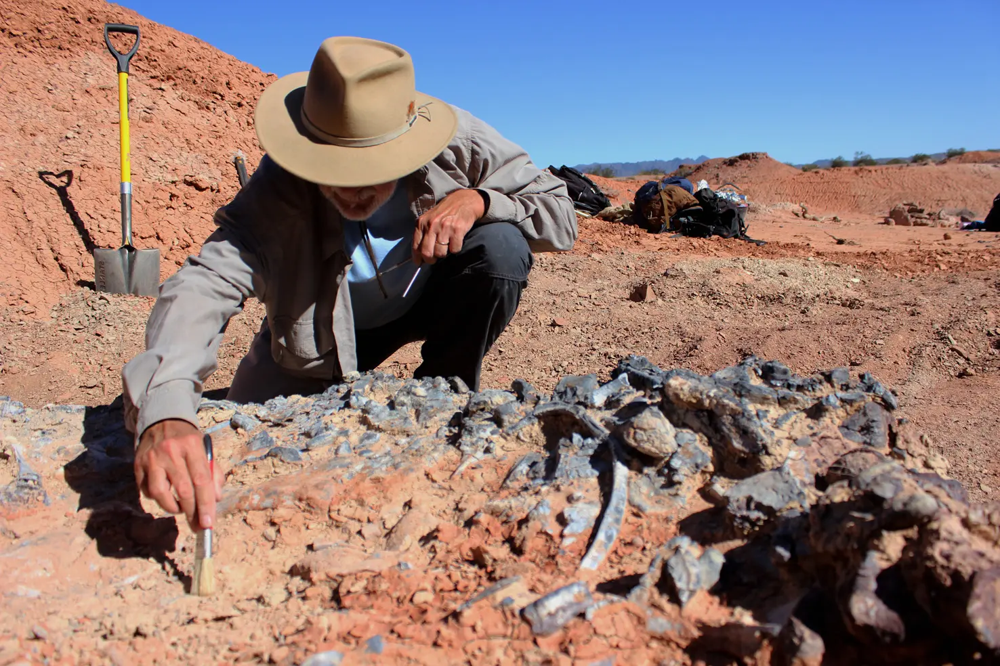
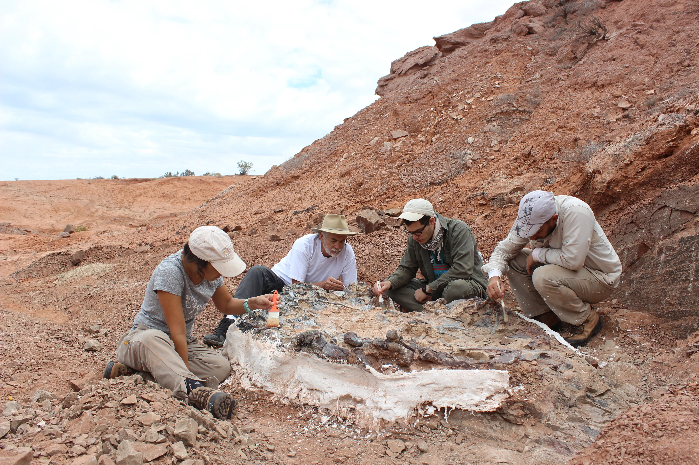
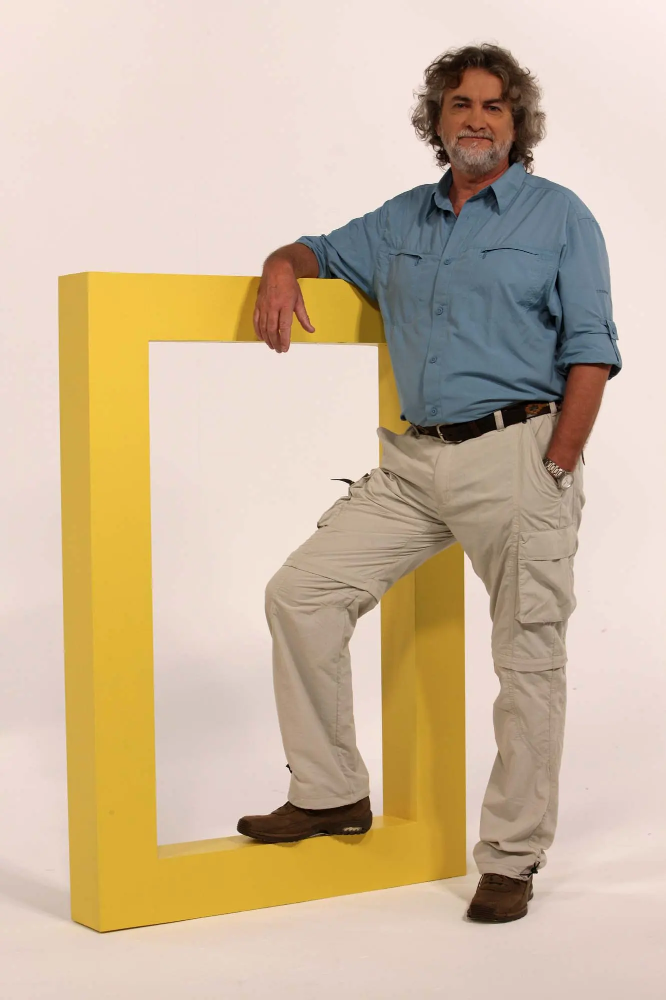

Explore Ischigualasto Provincial Park
The Cradle of Dinosaurs

Step into a world where time stands still, and the secrets of the Triassic era come to life. I am Dr. Ricardo Néstor Martinez, a paleontologist with over 30 years of experience studying the fossils and geology of Ischigualasto, a UNESCO World Heritage Site and one of the most important paleontological treasures on Earth.
Known as the "Valley of the Moon," Ischigualasto is a window into the past, offering a glimpse of the dawn of the dinosaur era. Here, 230 million years ago, the first dinosaurs, such as Eoraptor lunensis and Herrerasaurus ischigualastensis, roamed alongside other fascinating creatures that shaped the course of life on our planet. My work has been instrumental in uncovering these ancient stories, with discoveries that have been published in leading scientific journals like Nature and Science.
As your guide, I invite you to explore this extraordinary landscape with me. Through my scientifically enriched tours, you will:
- Walk in the footsteps of the earliest dinosaurs.
- Discover the geology and fossils that make Ischigualasto a global landmark.
- Learn about the groundbreaking research that has transformed our understanding of the Triassic world.
Whether you are a curious traveler, a student, or a fellow researcher, my tours are tailored to provide an unforgettable experience. Together, we will uncover the mysteries of Ischigualasto, from its iconic rock formations to the ancient life that once thrived here.
Join me on a journey through time, where science and adventure meet in one of the most awe-inspiring places on Earth. Let’s explore the wonders of Ischigualasto together!
Tours

The tour offers a unique opportunity to explore the park’s hidden gems and learn about the origins of dinosaurs in an interactive and personalized way.
What You’ll Experience
Our scientific tours are designed to provide an immersive and educational experience. Here’s what you can expect:
- Discover Iconic Fossil Sites: Visit the exact locations where emblematic fossils like Eoraptor lunensis and Herrerasaurus ischigualastensis were discovered.
- Explore Unique Geoforms: Marvel at Ischigualasto’s stunning rock formations, shaped by millions of years of geological processes.
- Access Hidden Areas: Venture into remote and lesser-known parts of the park, away from the usual paths.
- Learn to Identify Fossils: Gain hands-on experience in recognizing and interpreting fossils in the field.
- Step into a Paleontologist’s Shoes: Understand the daily work of a paleontologist, from excavation techniques to scientific documentation.
- Understand Geology and Paleontology: Learn key concepts about the Earth’s history and the evolution of life.
- Uncover the Origins of Dinosaurs: Dive into the fascinating story of how dinosaurs emerged and dominated the Triassic world.
Why Choose Our Tours?
- Expert Guidance: Led by Dr. Ricardo N. Martinez, a leading authority on Ischigualasto’s fossils and geology.
- Personalized Experience: Tours are tailored to your interests, preferences, and schedule.
- Exclusive Access: Explore areas of the park that are off-limits to regular visitors.
- Interactive Learning: Engage in hands-on activities and discussions that make science accessible and exciting.
- Unforgettable Memories: Create lasting memories as you explore one of the world’s most important fossil sites.
Tour Details
- Duration: Customizable (half-day, full-day, or multi-day options available).
- Group Size: Private or small groups to ensure a personalized experience.
- Inclusions: Transportation, expert guide, field equipment, and educational materials.
- What to Bring: Comfortable clothing, sturdy shoes, sunscreen, water, and a sense of adventure!
How to Book Your Tour
Our tours are fully customizable to meet your interests and availability. To plan your unique adventure:
- 1. Contact Us: Reach out to Dr. Ricardo N. Martinez to discuss your preferences and schedule.
- 2. Plan Your Experience: We’ll work with you to design a tour that matches your interests, whether you’re a casual visitor, a student, or a science enthusiast.
- 3. Explore Ischigualasto: Embark on a journey through time and discover the secrets of the Triassic era.
Contact today to reserve your spot or request more information. Let’s explore Ischigualasto together!
Testimonials
“Dr. Martinez’s tour was the highlight of our trip to Argentina. His knowledge and passion for paleontology made the experience unforgettable.”
— Sarah T., USA
“A truly unique opportunity to explore Ischigualasto like a paleontologist. Highly recommended!”
— James L., UK
About me

I am Dr. Ricardo N. Martinez , a paleontologist with over three decades of experience specializing in the Triassic fossils of Ischigualasto, Argentina. As a Licentiate and Doctor in Geological Sciences from the National University of San Juan, my research has focused on the stratigraphy, taphonomy, and evolution of early dinosaurs and other vertebrates from the Ischigualasto Formation. I have led numerous groundbreaking paleontological campaigns, resulting in the discovery of iconic species such as Eoraptor lunensis, Herrerasaurus ischigualastensis, Eodromaeus murphi, Sanjuansaurus gordilloi, which have reshaped our understanding of the dawn of the dinosaur era.
Currently, I serve as the Head of the Vertebrate Paleontology Cabinet at the Institute and Museum of Natural Sciences at the University of San Juan, where I also curate the Paleovertebrate Collection. My work has been published in leading scientific journals, including Nature and Science, and I have presented at international conferences worldwide
As a guide, I offer unique, scientifically enriched tours of Ischigualasto Provincial Park, sharing my deep knowledge of its geology, paleontology, and natural history. Whether you are a curious traveler, a student, or a fellow researcher, I invite you to join me in exploring the ancient landscapes and fossils that make Ischigualasto a global treasure. Together, we will uncover the secrets of the Triassic world and the fascinating creatures that once roamed this land.
Ricardo Martinez in the news
Contact